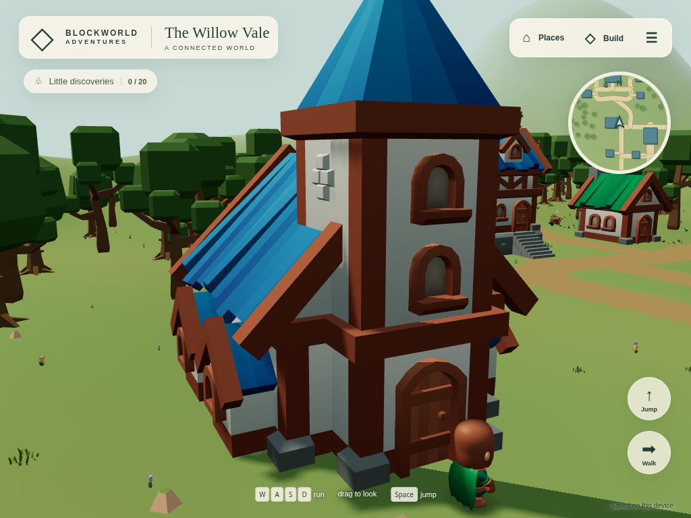
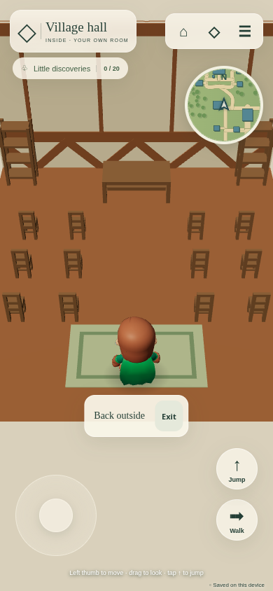
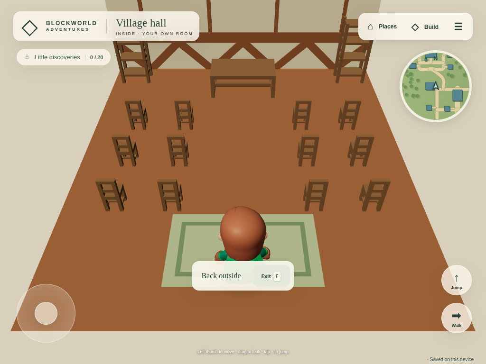

Managed Chromium SwiftShader and phone/tablet emulation. Physical hardware unverified. Existing coherent CC0 room/furniture modules are reused. The hall has one accessible floor; its tower remains closed.


